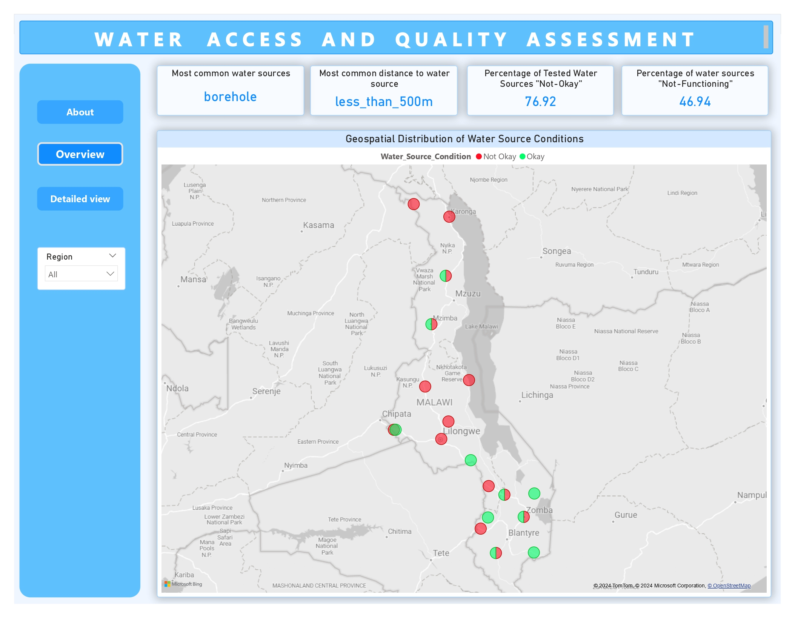

Objective
To collect and analyze data on water access and quality in remote areas in real-time, providing local authorities and NGOs with actionable insights to improve water infrastructure and public health outcomes.
Problem Statement
Rural communities often face challenges with access to clean water. Tracking water availability, quality, and the condition of water sources in these areas is vital for public health and long-term planning, but traditional data collection methods are slow and inefficient. A real-time, scalable solution is needed to improve the monitoring process.
Proposed Solution
Using KoboCollect for mobile data collection and Power BI for real-time data visualization, the goal is to monitor and report on
- Water source availability (e.g., wells, rivers, boreholes).
- Water quality indicators (e.g., pH level, contamination, turbidity).
- Infrastructure conditions (e.g., broken pumps, damaged wells).
- Access patterns (e.g., distance traveled to fetch water, frequency of usage).
Implementation Plan
- XLS Form Designing
- KoboCollect
- Power BI Dashboarding
2. KoboCollect
Data was collected in real-time using the KoboCollect app, with immediate syncing of data for monitoring. This enabled us to capture the water sources' condition and health issues as they were reported in the field.
3. Power BI Dashboarding
The collected data was analyzed and visualized using Power BI, allowing for detailed insights into water source conditions and reported health issues across regions. This dashboard provided a clear overview of the situation and helped identify areas needing immediate attention.
To see the file report, download the pbix here.



Key Findings
The insights seen from the survey:
- Most common water source available in Districts are 'Boreholes'
- Atleast alot of water sources are near people within communities
- Sadly alot of water sources that were tested are not okay or not functioning
- As a result people need more water sources as well as proper maintenance of the already existing water sources
- Which in return will reduce health issues of Malaria, Diarrhea and Cholera
Action
- To make any impact and help the country, possibly take immediate action starting with the Central Region then Northern Region and finally the Southern Region
- Expected available water sources would be Boreholes which either need maintenance or rather ways to assist the communities to make sure the water is safe to drink
- As well as make sure the water sources are clean + have growing vegetation/bush around the sources cut to reduce accumulation of Mosquitoes causing Malaria